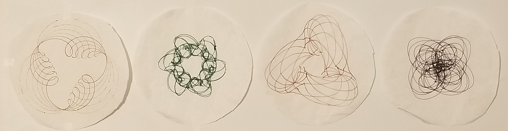
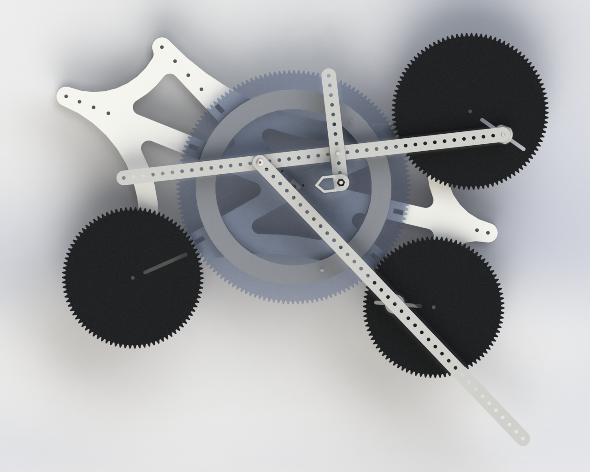

The Cycloid Drawing Machine
Made with lasercut gears and interchangable linkage arms, this machine is able to draw fully customizable cycloids.
#Mechanical #spirograph #linkages
Inspiration
Ever since I learned how to plot in the polar coordinate system on my TI-84, it always was entertaining to plug in random sequences of trigonometric and algebraic functions and see a beautiful, spiral-y graph as an output. The goal of the project is not to understand the trigonometry and algebra behind those beautiful shapes, but to visuallize them geometrically. Also, those graphs are just so pretty!
Design
The drawing machine has a large 150 tooth central gear, which driven by a small 12 volt motor. The main plate structure has six different branches with holes in them to allow different series of gear sizes to interact with the central drive gear. Each branch corresponds to a different series of gears to increase customizability as well as ease of use. For instance, one branch will have holes that allow 30, 60, 90, and 120 tooth gears to mesh with the drive gear, while another brance will have holes that allow 25, 50, 75, and 100 tooth gears to mesh with the drive gear
Each gear has a slot cut out of it. This is to allow the user to control the effective radius of the gear as it drives the main drawing arms. The drawing arms themselves also have slots cut out of them to allow the user to tune the machine to their liking.
Process
This project was first deisgned in Solidworks, where I could make important design decisions that would maximize the customizability of the project. In addition to determining the optimal locations for the output gears to interact well with the main central gear, Solidworks was used to perform motion studies to test the potential of the entire machine.
The machine was made by lasercutting 1/4" MDF, which is relatively strudy and really cheap. The pivot points were standard 1/4"-20 bolts. While it is not really desireable to have threaded surfaces bearing any kind of load or acting as a pivot, the bolts were a cheap and convenient. In this casual applicaiton setting, they were definitely sufficient.